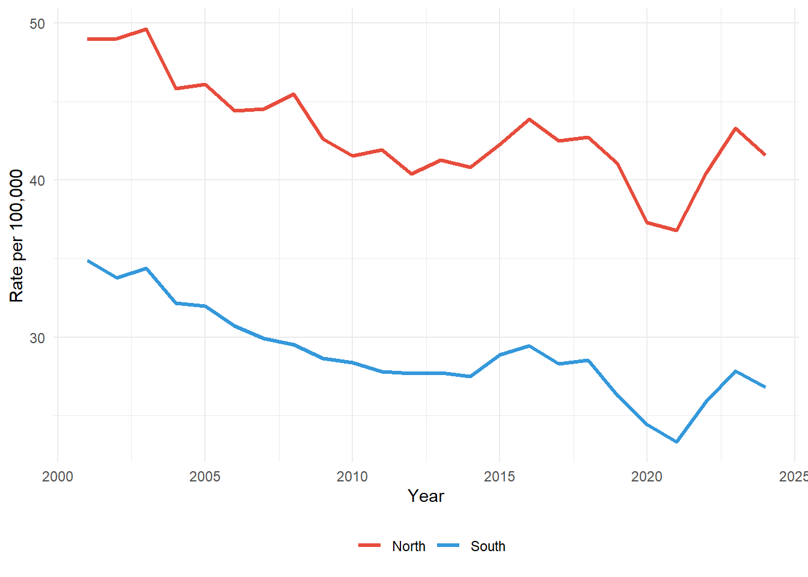
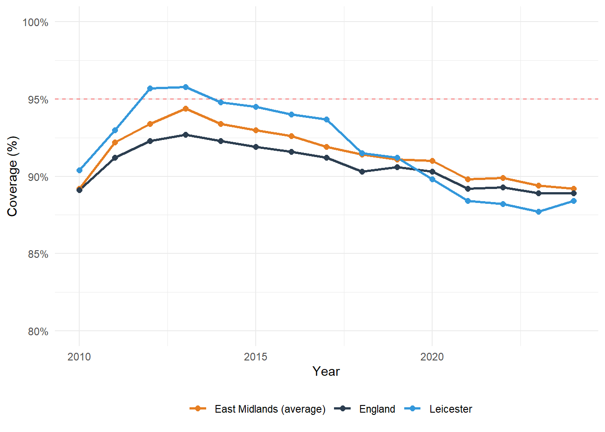

Respiratory Disease and Immunisation in England: Key Findings
Background
This briefing summarises analysis on respiratory mortality and MMR vaccination coverage in England. Data are drawn from the Fingertips public health database (Indicators 40701 and 30309) and the UKHSA dashboard, covering 2001 - 2024.
The analysis was structured as a simulated week of work in UKHSA Field Services, responding to a local authority request and identifying regional inequalities and outbreak signals.
Key Findings
| Finding | Detail |
|---|---|
| North‑South mortality gap | Northern regions have 14.1 more respiratory deaths per 100,000 than the South: a 48% higher rate [1]. The gap has persisted for over two decades. |
| Statistical significance | p < 0.001; Cohen’s d = 2.4 (large effect). |
| Leicester MMR decline | Coverage fell from 95.8% (2013) to 88.4% (2024), an 8‑point drop. Leicester has been below the WHO 95% herd immunity threshold for five consecutive years [2]. |
| C. difficile outbreak signal | East Midlands showed 80% of weeks exceeding the Poisson threshold, warranting investigation. |
Interpretation
North - South Respiratory Mortality Gap
The North has 14.1 additional respiratory deaths per 100,000 compared to the South: a 48% higher rate [1]. Asthma + Lung UK’s ICS Respiratory Review shows that rates of emergency admissions and deaths from lung conditions are much higher in northern areas such as Blackpool and Liverpool, where death rates are over two times higher than in more affluent areas like Richmond in London [3].
Six out of the 10 areas with the highest rates of emergency admissions and deaths from lung conditions are in the Northwest of England [1]. The drivers are structural: higher smoking rates, worse air pollution, poorer housing, and less access to early diagnosis [6].
The gap has persisted for over two decades. A Wellcome‑funded project notes that “there are deep-rooted and long-term regional health inequalities across England, with a two-year gap between the north and the south in how long people are expected to live” [5].
Leicester MMR Decline
Leicester’s MMR coverage declined from 95.8% in 2013 to 88.4% in 2024. This pattern is consistent with regional trends: from 2013/14 to 2023/24, MMR1 coverage in five-year-olds decreased by 7.1 percentage points to 87.0% in Birmingham and by 3.5 percentage points to 91.9% in the West Midlands [2].
The city has been below the WHO 95% herd immunity threshold for five consecutive years. According to UKHSA data, “no local authority in the West Midlands had coverage exceeding the WHO target of 95% in all the routine childhood immunisations” [2].
This decline is significant because measles outbreaks can occur when coverage falls below 90–95% [4]. The WHO recommends 95% coverage for both MMR doses to achieve and maintain herd immunity. In the UK, measles elimination status was lost in 2019 following a resurgence of cases, highlighting the importance of maintaining high vaccination coverage across all communities.

C. difficile Outbreak Signal
Using a Poisson threshold for sparse data (mean + 1.96 × √mean), the East Midlands showed 80% of weeks exceeding expected case counts. This level of sustained exceedance warrants line list requests from local trusts and further investigation.
Recommendations
| Priority | Action |
|---|---|
| 1 | Target resources to northern regions: additional investment in respiratory health services, smoking cessation, and housing improvement [1]. Asthma + Lung UK calls for a £40 million spirometry recovery fund with more funding to ICSs experiencing higher levels of deprivation [6]. |
| 2 | Investigate Leicester’s MMR decline: understand local factors behind the 8‑point drop, including vaccine confidence, access, and second‑dose uptake. The government’s 10‑year health plan should address childhood immunisation gaps [2]. |
| 3 | Follow up C. difficile outbreak signal: request line lists from East Midlands trusts and conduct further analysis. |
| 4 | Monitor inequalities quarterly: track the North‑South gap in routine surveillance [5]. |
Limitations
- Respiratory mortality data exclude COVID‑19 deaths (coded separately)
- MMR data are for age 2 only; coverage at age 5 may differ
- C. difficile baseline limited to 5 weeks in 2023
- Regional averages mask within‑area variation
References
Asthma + Lung UK. (2025). ICS Respiratory Review 2024/25. Available at: asthmaandlung.org.uk/healthcare-professionals/ics-respiratory-review
UK Parliament. (2025). Vaccination: Children – Written question 36734. Available at: questions-statements.parliament.uk/written-questions/detail/2025-03-10/36734
Asthma + Lung UK. (2023). Fighting to end the lung health lottery. Available at: asthmaandlung.org.uk/blog/campaigning/fighting-end-lung-health-lottery
World Health Organization. (2024). Measles. Available at: who.int/news-room/fact-sheets/detail/measles
Wellcome. (2026). North and South: Regional Health Inequalities in England – Grants Awarded. Available at: wellcome.org/research-funding/funding-portfolio/funded-grants/north-and-south-regional-health-inequalities
Asthma + Lung UK. (2025). ICS respiratory review – challenges. Available at: asthmaandlung.org.uk/healthcare-professionals/ics-respiratory-review/challenges
Prepared by: Marco Sorbona, PhD
Date: March 2026
GitHub: MarcoSorbona/ukhsa-respiratory-and-outbreak-surveillance
Live dashboard: marcoSorbona.github.io/ukhsa-respiratory-and-outbreak-surveillance/06_day6_dashboard.html
Data sources: Day 1: Respiratory mortality (Indicator 40701); Day 2: C. difficile (ukhsadatR); Day 3: MMR coverage (Indicator 30309); Day 4: North‑South grouping of Day 1 data